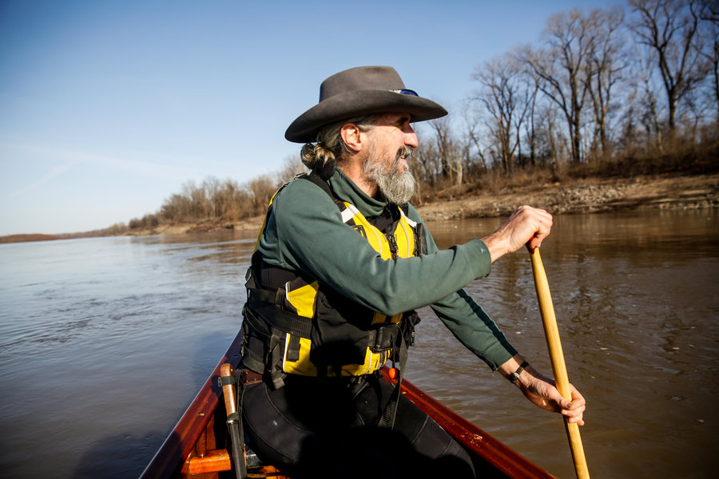
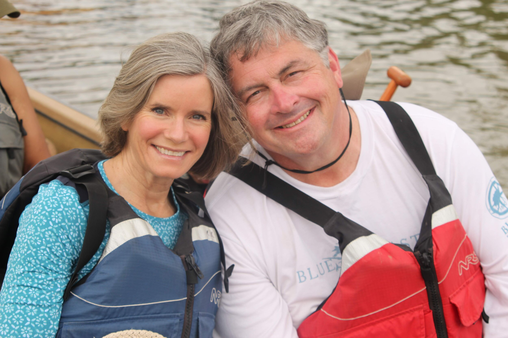
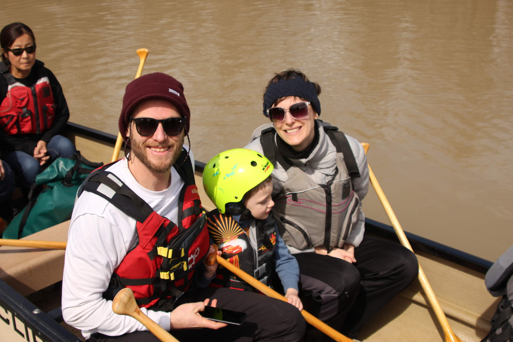
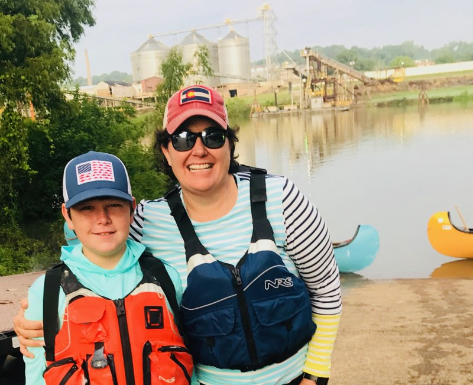
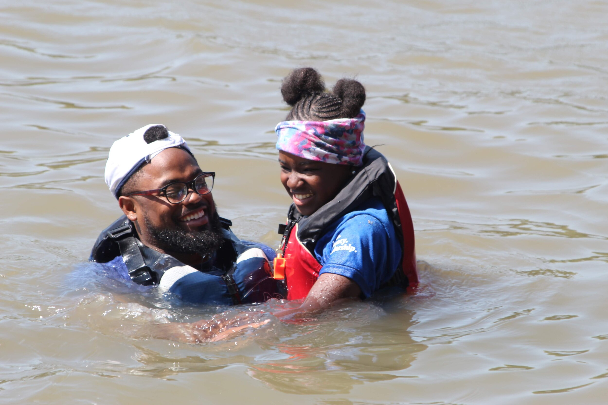
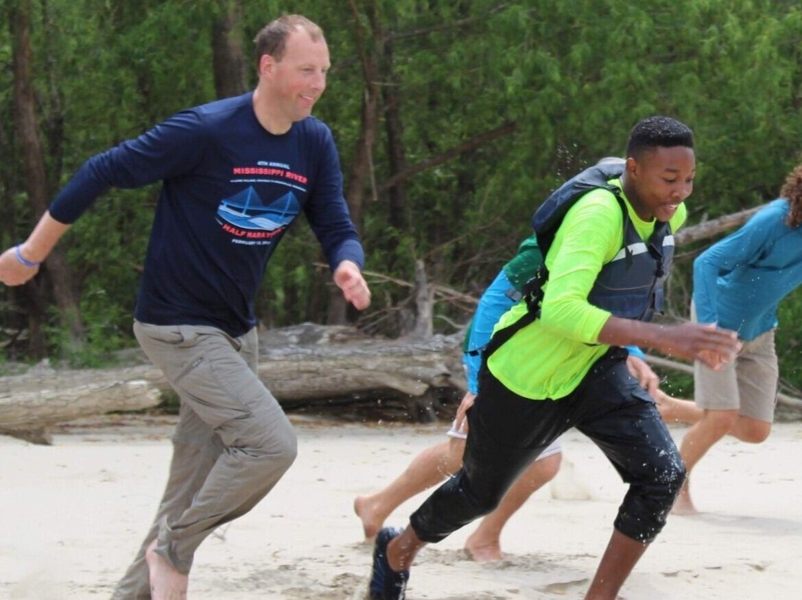
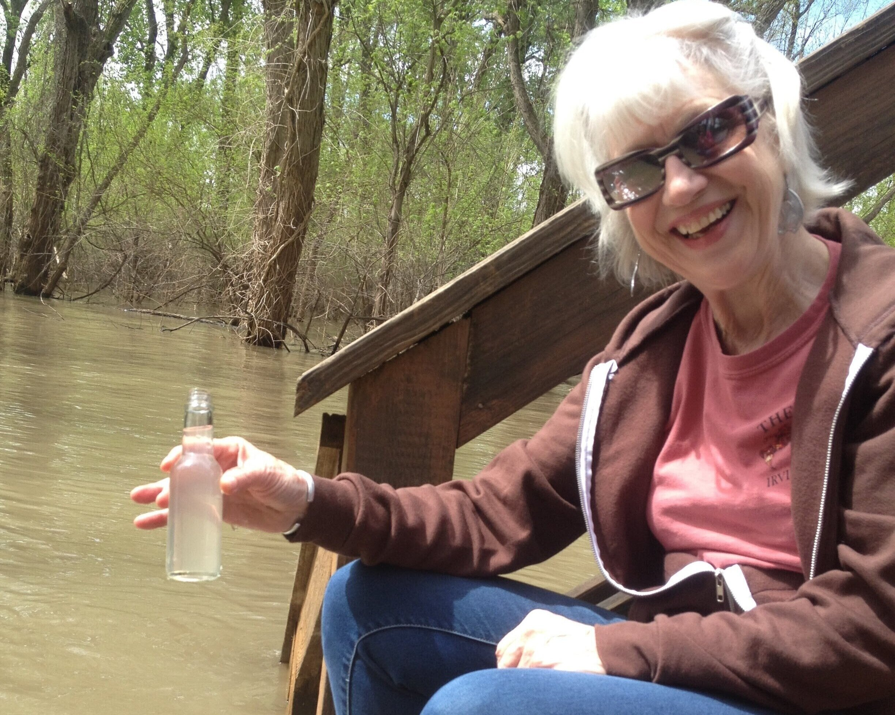
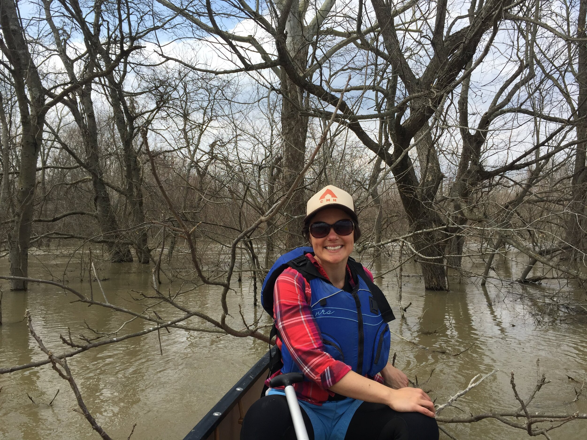

The Lower Mississippi River Foundation is dedicated to promoting stewardship of the Lower and Middle Mississippi River through deep engagement.

The Lower Mississippi River Foundation was founded in 2011 by John Ruskey, who has conducted canoe expeditions on the Mississippi River for over two decades.
The Foundation grew from the success of the Rivergator, a comprehensive paddler's guide to the Lower Mississippi that attracts over 200,000 annual users. Today, we focus on youth programming, stewardship, and increasing access to the river for Delta communities.
Our work centers on creating deep, meaningful connections between people and the Mississippi River — through education, exploration, and conservation.
View Our Strategic Plan
Board President

Board Treasurer

Board Secretary

Board Member
Board Member

Board Member

Board Member

Board Member